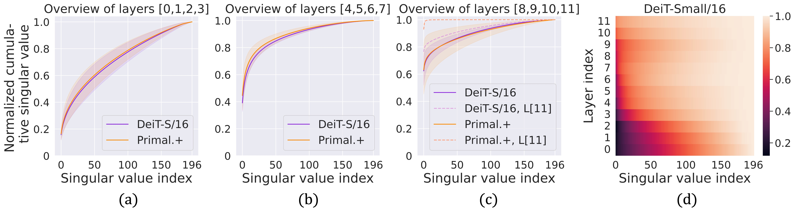

Abstract
Recently, a new line of works has emerged to understand and improve self-attention in Transformers by treating it as a kernel machine.
However, existing works apply the methods for symmetric kernels to the asymmetric self-attention, resulting in a nontrivial gap between the analytical understanding and numerical implementation.
In this paper, we provide a new perspective to represent and optimize self-attention through asymmetric Kernel Singular Value Decomposition (KSVD), which is also motivated by the low-rank property of self-attention normally observed in deep layers.
Through asymmetric KSVD, ) a primal-dual representation of self-attention is formulated, where the optimization objective is cast to maximize the projection variances in the attention outputs;
a primal-dual representation of self-attention is formulated, where the optimization objective is cast to maximize the projection variances in the attention outputs;
) a novel attention mechanism, i.e., Primal-Attention, is proposed via the primal representation of KSVD, avoiding explicit computation of the kernel matrix in the dual;
a novel attention mechanism, i.e., Primal-Attention, is proposed via the primal representation of KSVD, avoiding explicit computation of the kernel matrix in the dual;
) with KKT conditions, we prove that the stationary solution to the KSVD optimization in Primal-Attention yields a zero-value objective.
In this manner, KSVD optimization can be implemented by simply minimizing a regularization loss, so that low-rank property is promoted without extra decomposition.
Numerical experiments show state-of-the-art performance of our Primal-Attention with improved efficiency.
Moreover, we demonstrate that the deployed KSVD optimization regularizes Primal-Attention with a sharper singular value decay than that of the canonical self-attention, further verifying the great potential of our method.
To the best of our knowledge, this is the first work that provides a primal-dual representation for the asymmetric kernel in self-attention and successfully applies it to modeling and optimization.
with KKT conditions, we prove that the stationary solution to the KSVD optimization in Primal-Attention yields a zero-value objective.
In this manner, KSVD optimization can be implemented by simply minimizing a regularization loss, so that low-rank property is promoted without extra decomposition.
Numerical experiments show state-of-the-art performance of our Primal-Attention with improved efficiency.
Moreover, we demonstrate that the deployed KSVD optimization regularizes Primal-Attention with a sharper singular value decay than that of the canonical self-attention, further verifying the great potential of our method.
To the best of our knowledge, this is the first work that provides a primal-dual representation for the asymmetric kernel in self-attention and successfully applies it to modeling and optimization.
Method
Canonical self-attention is with asymmetric kernel
Let

be the input data sequence.
In self-attention, the queries, keys and values output the linear projections of the input sequence:
 = W_q \mathbf{x}_i,\quad k(\mathbf{x}_i) = W_k \mathbf{x}_i,\quad
v(\mathbf{x}_i) = W_v \mathbf{x}_i.)
The canonical self-attention is with "softmax" activation applied for bringing non-linearity and positives, yielding the attention weights:
 = \text{softmax} \left( \left< W_q \mathbf{x}_i, W_k \mathbf{x}_j\right> / \sqrt{d_k} \right), \quad i,j=1,\ldots,N,)
where
:\mathbb{R}^d\times\mathbb{R}^d\mapsto \mathbb{R})
serves as the kernel function.
Notice that in general,

,
leading to
an asymmeyric kernel
where
\neq \kappa(\mathbf{x}_j, \mathbf{x}_i))
.
Primal-dual representation of self-attention based on KSVD
Canonical self-attention can be represented by the dual representation of the kernel SVD (KSVD) problem, while our method is based on the primal representation. Please refer to Section 3 in the paper for more details.
Remark 3.3 (Primal-dual representations of KSVD in self-attention).
In the KSVD formulations for the asymmetric kernel matrix in self-attention, with KKT conditions, the projection scores can be either represented in the primal using explicit feature maps or in the dual using kernel functions:
 = W_{e|X}^\top \phi_q(\mathbf{x})
\\
r(\mathbf{x}) = W_{r|X}^\top \phi_k(\mathbf{x})
\end{cases},
\quad
\textit{Dual:}\,
\begin{cases}
e(\mathbf{x}) = \sum\nolimits_{j=1}^N \mathbf{h}_{r_j} \kappa(\mathbf{x},\mathbf{x}_j)
\\
r(\mathbf{x}) = \sum\nolimits_{i=1}^N \mathbf{h}_{e_i} \kappa(\mathbf{x}_i,\mathbf{x})
\end{cases}.
)
Primal-Attention
We derive a novel attention mechanism by leveraging the primal representation of KSVD, namely,
Primal-Attention, where two explicit feature maps

are adopted.
To fully exploit the asymmetry in the kernel matrix of self-attention, Primal-Attention concatenates the two sets of projections using both left and right singular vectors, and thus formulates the attention outputs as follows:
 ; W_{r|X}^\top \phi_k(\mathbf{x}_i)\right]
= \left[ W_{e}^\top f(X) g_q(q(\mathbf{x}_i)) ; W_{r}^\top f(X) g_k(k(\mathbf{x}_i))\right].)
In Primal-Attention, the projection weights

in the primal play the role as the counterparts of the values in the dual.
Our Primal-Attention flow is detailed in the bottom part of the teaser image.
Results
Please refer to our paper for more experiments.
Spectrum analysis of the self-attention matrix on ImageNet-1K

(a)-(c) Plot the cumulative explained variance regarding the singular values of the attention matrix with mean and standard deviation of the chosen layers in pre-trained DeiT-Small/16 and Primal.+DeiT-Small/16 (ours): the attention matrix attains sharper singular value decays in deeper layers, also shown in (d). Note that we also plot the cumulative explained variance curves of the self-attention matrix from the last layer, i.e., the 11-th layer denoted by “L[11]”, of both models in (c). Our method shows an enhanced low-rank property of the attention matrix upon the baseline.
Resources
BibTeX
If you find this work useful for your research, please consider citing:
@article{chen2023primal,
title={Primal-Attention: Self-attention through Asymmetric Kernel SVD in Primal Representation},
author={Chen, Yingyi and Tao, Qinghua and Tonin, Francesco and Suykens, Johan AK},
journal={Advances in Neural Information Processing Systems},
year={2023}
}
Acknowledgements
This work is jointly supported by the European Research Council under the European Union’s Horizon 2020 research and innovation program/ERC Advanced Grant E-DUALITY (787960), iBOF project Tensor Tools for Taming the Curse (3E221427), Research Council KU Leuven: Optimization framework for deep kernel machines C14/18/068, KU Leuven Grant CoE PFV/10/002, The Research Foundation–Flanders (FWO) projects: GOA4917N (Deep Restricted kernel Machines: Methods and Foundations), Ph.D./Postdoctoral grant, the Flemish Government (AI Research Program), EU H2020 ICT-48 Network TAILOR (Foundations of Trustworthy AI-Integrating Reasoning, Learning and Optimization), Leuven.AI Institute.